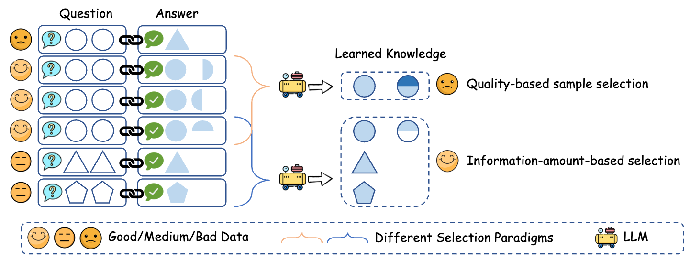

Official implementation for Entropy Law: The Story Behind Data Compression and LLM Performance.


1. Paper
Mingjia Yin, Chuhan Wu, Yufei Wang, Hao Wang, Wei Guo, Yasheng Wang, Yong Liu, Ruiming Tang, Defu Lian, and Enhong Chen. Entropy Law: The Story Behind Data Compression and LLM Performance. arXiv preprint arXiv:2407.06645, 2024.
Paper / PDF / Project Page / Citation
ZIP selects instruction data through an entropy-law view of compression: a useful selected subset should reduce redundant information while preserving diverse learning signals for LLM alignment. This repository provides the ZIP selection script and the expected ShareGPT-style input format used by the paper experiments.
2. Highlights
- Uses compression ratio as a data-selection signal for instruction tuning pools.
- Selects data in stages, combining global candidate filtering with local greedy selection.
- Works with ShareGPT-style conversation records and can be plugged into existing alignment stacks.
- Keeps alignment and evaluation decoupled: ZIP selects data, while Axolotl and FastChat can handle SFT and MT-Bench evaluation.
3. Method At A Glance

The key idea is to avoid picking a collection of individually high-quality but mutually redundant samples. ZIP repeatedly evaluates how a candidate changes the compressed representation of the selected pool, then adds samples that improve information coverage under the target budget.
4. Repository Structure
.
├── ZIP.py # ZIP data-selection implementation
├── assets/motivation.png # Motivation figure from the paper
├── docs/ # GitHub Pages project page
└── README.md5. Installation
Install the Python dependencies required by ZIP.py:
pip install torchThe repository keeps ZIP itself lightweight. Alignment and evaluation dependencies are managed by the external tools described below.
6. Data
The data pool used in the paper can be found in the DEITA SOTA pool, provided by the DEITA project.
ZIP currently expects ShareGPT-style records:
[
{
"id": 0,
"conversations": [
{"from": "human", "value": "XXX"},
{"from": "gpt", "value": "XXX"}
],
"source": "ShareGPT"
}
]7. Quick Start
Run data selection with a target budget:
python ZIP.py --data_path data_pool.json --save_path selected_data.json --budget 10000Optional parameters in ZIP.py include:
--k1: number of globally filtered candidates per stage.--k2: number of second-stage candidates.--k3: number of final greedy selections per stage.--n_jobs: worker count for compression-ratio computation.
8. LLM Alignment And Evaluation
- Use Axolotl to align LLMs with ZIP-selected data.
- Use MT-Bench in FastChat to evaluate aligned models.
ZIP writes the selected subset to selected_data.json; downstream alignment tools should consume that file according to their own training format.
9. Configuration Notes
The main selection budget is controlled by --budget. Larger pools and larger candidate windows increase selection cost because ZIP repeatedly computes compression ratios for candidate combinations.
10. Experimental Highlights
The paper studies why sample combinations matter for LLM data selection. ZIP is designed to reduce information redundancy rather than scoring each sample independently.
| Backbone | Random MT-Bench | Strongest listed non-ZIP baseline | ZIP MT-Bench | ZIP cost | Avg. token length |
|---|---|---|---|---|---|
| Mistral-7B SFT | 6.85 | 6.91 (Cluster) | 7.08 | 4.5h CPU-only | 543 |
| Llama-3-8B SFT | 7.16 | 7.18 (Cluster) | 7.28 | 4.5h CPU-only | 470 |
The paper further reports that ZIP is among the least expensive non-random methods and does not require proprietary LLM scoring or a proxy model. Its entropy-law analysis shows that lower compression ratio correlates with better downstream performance, supporting the idea that selected sample combinations should reduce redundant information.
Conclusion: ZIP improves instruction-tuning data selection by modeling subset-level information overlap, not only individual-sample quality.
11. Notes For Maintainers
- Keep
ZIP.pyfocused on data selection; do not add alignment-framework assumptions to the core selector. - If new input schemas are supported, document the schema and add a minimal conversion example.
- Keep external data links in this README in sync with the paper's data sources.
12. Citation
If you find this project helpful, please cite:
@article{yin2024entropy,
title={Entropy Law: The Story Behind Data Compression and LLM Performance},
author={Yin, Mingjia and Wu, Chuhan and Wang, Yufei and Wang, Hao and Guo, Wei and Wang, Yasheng and Liu, Yong and Tang, Ruiming and Lian, Defu and Chen, Enhong},
journal={arXiv preprint arXiv:2407.06645},
year={2024}
}13. Contact
- First author: Mingjia Yin.
- Repository questions: please open a GitHub issue in this repository.